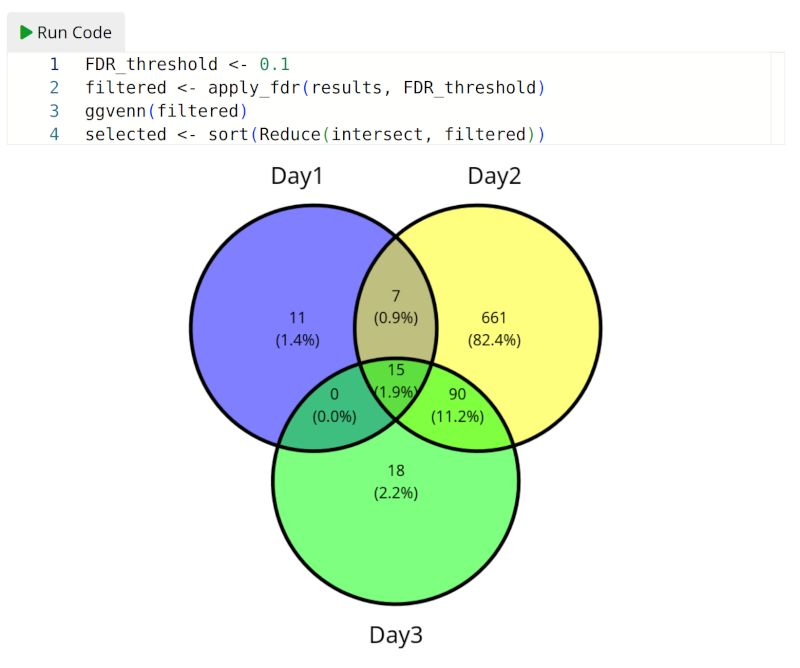

Embedding R into Quarto documents with quarto-webr
R
Quarto
TIL
Author
Thomas Sandmann
Published
November 18, 2023
tl;dr
Today I learned how to use the quarto-webr extension to turn a Quarto markdown document into an interactive report that executes R code in the browser and lets readers change the code on the fly!

Venn diagram
Motivation
Since its first release in March 2023, the webR project has made incredible progress. It
makes it possible to run R code in the browser without the need for an R server to execute the code: the R interpreter runs directly on the user’s machine.
I routinely communicate the results of analysis to collaborators as HTML documents, e.g. websites created from Quarto markdown files that combine prose and the analysis code itself. While I incorporate interactive elements (e.g. tables or plots) as much as possible, the reports are static - e.g. they don’t allow users to change parameters on the fly.
That’s why I am excited to learn about James J Balamuta’s quarto-webr extension, which embeds webR into quarto documents.1
Today I am making my first steps, with the goal of creating an HTML report that
Reads differential gene expression results from multiple experiments from CSV files.2
Applies a user-specified false discovery (FDR) threshold to each experiment.
Creates a Venn diagram to visualize the overlap between the results.
Shows the results for the genes deemed significantly differentially expressed in all experiments.
Specifically, I would like users to be able to modify the FDR threshold themselves and to trigger a refresh of the plot & tables.
Installation & configuration
I already have quarto installed on my system3, and first add the quarto-webr extension:
quarto add coatless/quarto-webr
Enabling webr-r code cells
With the extension in place, I can now create webr-r code cells in my Quarto documents. To render them, I also need to include the corresponding filter in the YAML header of the file.4
Here is a minimal example of a Quarto document with the required header:
---
title: webR - Hello world
format: html
engine: knitr
filters:
- webr
---
The following code cell will be executed by `webR` within the user's browser.
```{webr-r}
print('Hello mtcars')
```
Using additional R packages
The webR community has precompiled a large collection of R packages. The quarto-webr extension facilitates their installation: we can simply list required packages in the webr section of the YAML header. For example, I will use the ggvenn and huxtable packages to create the Venn diagram and result tables, respectively.
At the time of writing, the quarto-webr extension supports code cells with three different contexts5
interactive cells are executed when the user clicks the Run Code button and display both the code and the output.
setup cells are executed automatically and neither their code nor their output is shown.
output cells execute automatically but don’t show their code.
I will use setup contexts to download & parse the output of three differential expression analyses, and then use interactive contexts to trigger filtering, plotting and printing the result tables.
Putting it all together
Now it’s time to write some R code to retrieve the CSV files via http, parse them, generate the Venn diagram and subset the result tables to those genes that pass the chosen FDR threshold.
---
title: "Embedding R into Quarto documents with quarto-webr"
subtitle: "Example: intersecting differential expression results"
author: "Thomas Sandmann"
date: '2023/11/18'
format: html
engine: knitr
webr:
show-startup-message: true
packages: ['ggvenn', 'huxtable']
channel-type: "post-message"
filters:
- webr
editor_options:
chunk_output_type: console
---
```{webr-r}
#| context: setup
kUrlRoot <- paste0(
"https://tomsing1.github.io/blog/posts/quarto-webr"
)
kResults <- c(
"Day1" = "day1_results",
"Day2" = "day2_results",
"Day3" = "day3_results"
)
results <- lapply(kResults, \(result) {
url <- paste(kUrlRoot, paste0(result, ".csv"), sep = "/")
download.file(url, basename(url))
read.csv(basename(url))[, c("gene_name", "adj.P.Val", "logFC")]
})
names(results) <- names(kResults)
# keep only genes present in all results
keep <- Reduce(intersect, lapply(results, \(x) x$gene_name))
results <- lapply(results, \(result) result[result$gene_name %in% keep, ])
# Helper function to apply an FDR cutoff to a list of dataframes
apply_fdr <- function(x, fdr_cutoff = 0.01){
lapply(x, function(df){
df[df$adj.P.Val < fdr_cutoff, ]$gene_name
})
}
```
## Introduction
This interactive website allows users to intersect differential expression
results of three different comparisons from an experiment published by
[Xia et al](https://www.biorxiv.org/content/10.1101/2021.01.19.426731v1).
The experiment was performed in three different batches (e.g. samples were
collected on three different days). For this report, the differences
between samples from homozygous APP-SAA and wildtype animals were estimated
_separately_ for each batch/day: `Day 1`, `Day 2` and `Day 3`.[^1]
[^1]: Analyzing each batch separately is _not_ the best way to estimate genotype
effects across the full experiment. For this exercise, I just want to obtain
three different contrasts to compare in a Venn diagram. You can find more
details about a more realistic analysis of this experiment in
[this blog post](https://tomsing1.github.io/blog/posts/nextflow-core-quantseq-3-xia/).
By manipulating the code cells include in this website, you can select
a set of genes that passes a user-defined FDR threshold on all three days.[^2]
[^2]: The FDR does not reveal the direction of differential expression. So it
is possible that we will pick up genes that are statistically significantly
differentially expressed in _opposite directions_.
## Step 1: Choose a false-discovery (FDR) threshold
1. Please choose an FDR threshold by changing the `FDR_threshold` the code
box below.
- It will be applied to results from all three comparisons.
- For example, setting `FDR_threshold < 0.1` will retain all genes with a
false-discovery rate < 10% in _all three experiments_.
2. Press the "Run Code" button to create a Venn diagram.
- You can save the plot by right-clicking and selecting `Save image as`.
3. Repeat until you like the results.
```{webr-r}
#| context: interactive
FDR_threshold <- 0.1
filtered <- apply_fdr(results, FDR_threshold)
ggvenn(filtered)
selected <- sort(Reduce(intersect, filtered))
```
## Step 2: List the genes that pass the FDR threshold in all three comparisons
Next, press the `Run Code` button to see the list of genes that pass your
selected FDR threshold.
- If you triple-click on the list of gene symbols, you can copy them into
another document.
```{webr-r}
#| context: interactive
paste(selected, collapse = ", ")
```
### Step 3: See the differential expression results for the selected genes
For more context, the following sections show you tables with the results
from your three experiments for the genes you selected in Step 1.
## Day 1
Hit `Run Code` button to see the expression of the selected genes
or download [results for all genes](https://tomsing1.github.io/blog/posts/quarto-webr/day1_results.csv.gz)
```{webr-r}
#| context: interactive
results[["Day1"]][match(selected, results[["Day1"]]$gene_name), ] |>
huxtable::hux()
```
### Day 2
Hit `Run Code` button to see the expression of the selected genes
or download [results for all genes](https://tomsing1.github.io/blog/posts/quarto-webr/day2_results.csv.gz)
```{webr-r}
#| context: interactive
results[["Day2"]][match(selected, results[["Day2"]]$gene_name), ] |>
huxtable::hux()
```
### Day 3
Hit `Run Code` button to see the expression of the selected genes
or download [results for all genes](https://tomsing1.github.io/blog/posts/quarto-webr/day3_results.csv.gz)
```{webr-r}
#| context: interactive
results[["Day3"]][match(selected, results[["Day3"]]$gene_name), ] |>
huxtable::hux()
```
```{webr-r}
#| context: interactive
sessionInfo()
```
Deployment
Because the final report is just a set of static files, deploying it simply requires sharing the rendered HTML file and the associated files.
Success! I was able to render a Quarto markdown document into an interactive HTML report that allows the user to modify the FDR threshold on the fly.
It took me quite a while to get everything to work, and I am looking forward to the next release of the quarto-webr extension that promises even better control of each cell’s context.
Even though my goal was to expose only a single user-specified variable (the FDR threshold), my report contains multiple interactive elements that the user has to trigger in sequence. Wouldn’t it be great if subsequent code cells could detect upstream changes and recalculate their results automatically?
For this use case, e.g. sharing interactive analysis reports, it would eventually be helpful to be able to include familiar GUI elements - e.g. dropdown menus, sliders or tick boxes - similar to what is already possible when a shiny server is available.
It’s early days for the webR tool chain, but if its incredible progress over the last 6-9 months is any indication, then there will be lots of features to look forward to soon!
Many thanks to James J Balamuta for creating the quarto-webr extension and to the webR team - especially George Stagg - for opening so many opportunities for the R community!
Reproducibility
Session Information
sessioninfo::session_info()
─ Session info ───────────────────────────────────────────────────────────────
setting value
version R version 4.3.2 (2023-10-31)
os Debian GNU/Linux 12 (bookworm)
system x86_64, linux-gnu
ui X11
language (EN)
collate en_US.UTF-8
ctype en_US.UTF-8
tz America/Los_Angeles
date 2023-11-21
pandoc 3.1.1 @ /usr/lib/rstudio/resources/app/bin/quarto/bin/tools/ (via rmarkdown)
─ Packages ───────────────────────────────────────────────────────────────────
! package * version date (UTC) lib source
P BiocManager 1.30.22 2023-08-08 [?] RSPM (R 4.3.1)
R bspm 0.5.5 <NA> [?] <NA>
P cli 3.6.1 2023-03-23 [?] CRAN (R 4.3.1)
P digest 0.6.33 2023-07-07 [?] CRAN (R 4.3.1)
P evaluate 0.21 2023-05-05 [?] CRAN (R 4.3.1)
P fastmap 1.1.1 2023-02-24 [?] CRAN (R 4.3.1)
P htmltools 0.5.6 2023-08-10 [?] CRAN (R 4.3.1)
P htmlwidgets 1.6.2 2023-03-17 [?] CRAN (R 4.3.1)
P jsonlite 1.8.7 2023-06-29 [?] CRAN (R 4.3.1)
P knitr 1.43 2023-05-25 [?] CRAN (R 4.3.1)
renv 1.0.2 2023-08-15 [1] RSPM (R 4.3.0)
P rlang 1.1.1 2023-04-28 [?] CRAN (R 4.3.1)
P rmarkdown 2.24 2023-08-14 [?] CRAN (R 4.3.1)
P rstudioapi 0.15.0 2023-07-07 [?] CRAN (R 4.3.1)
P sessioninfo 1.2.2 2021-12-06 [?] CRAN (R 4.3.1)
P xfun 0.40 2023-08-09 [?] CRAN (R 4.3.1)
P yaml 2.3.7 2023-01-23 [?] CRAN (R 4.3.1)
[1] /home/sandmann/repositories/blog/renv/library/R-4.3/x86_64-pc-linux-gnu
[2] /home/sandmann/.cache/R/renv/sandbox/R-4.3/x86_64-pc-linux-gnu/9a444a72
P ── Loaded and on-disk path mismatch.
R ── Package was removed from disk.
──────────────────────────────────────────────────────────────────────────────
quarto-webr would not be possible without the help of George W Stagg, the lead developer of the webR project.↩︎
The details of the experiment are not important, as I am just looking for a convenient example to test the quarto-webr extension. If you would like to learn more please check out this previous post. An R script that generates the CSV files using the limma/voom framework is available here↩︎
---title: "Embedding R into Quarto documents with quarto-webr"author: "Thomas Sandmann"date: "2023-11-18"freeze: truecategories: [R, Quarto, TIL]editor: markdown: wrap: 72format: html: toc: true toc-depth: 4 code-tools: source: true toggle: false caption: noneeditor_options: chunk_output_type: consoleresources: - day1_results.csv - day2_results.csv - day3_results.csv - quarto_webr_example.qmd - differential_expression_analysis.R - webr-serviceworker.js - webr-worker.js---## tl;drToday I learned how to use the[quarto-webr](https://github.com/coatless/quarto-webr)extension to turn a Quarto markdown document [into an interactive report](https://tomsing1.github.io/blog/posts/quarto-webr/quarto_webr_example.html)that executes R code in the browser and lets readers change the code on the fly!{ width=50% }## MotivationSince its first release in March 2023, the [webR project](https://docs.r-wasm.org/webr/latest/)has made incredible progress. It> makes it possible to run R code in the browser without the need for an Rserver to execute the code: the R interpreter runs directly on the user’smachine. I routinely communicate the results of analysis to collaborators as HTMLdocuments, e.g. websites created from [Quarto markdown](https://quarto.org/)files that combine prose and the analysis code itself. While I incorporate interactive elements (e.g. tables or plots) as much as possible, the reportsare static - e.g. they don't allow users to change parameters on the fly.That's why I am excited to learn about James J Balamuta's [quarto-webr](https://github.com/coatless/quarto-webr)extension, which embeds webR into quarto documents.[^1][^1]: `quarto-webr` would not be possible without the help of George W Stagg,the lead developer of the[webR project](https://docs.r-wasm.org/webr/latest/).Today I am making my first steps, with the goal of creating an HTML report that1. Reads differential gene expression results from multiple experiments from CSV files.[^2]2. Applies a user-specified false discovery (FDR) threshold to each experiment.3. Creates a Venn diagram to visualize the overlap between the results.4. Shows the results for the genes deemed significantly differentially expressed in _all_ experiments.Specifically, I would like users to be able to modify the FDR thresholdthemselves and to trigger a refresh of the plot & tables.[^2]: The details of the experiment are not important, as I am just looking fora convenient example to test the `quarto-webr` extension. If you would like to learn more please check out [this previous post](https://tomsing1.github.io/blog/posts/nextflow-core-quantseq-3-xia/).An R script that generates the CSV files using the limma/voom framework[is available here](http://localhost:5154/posts/quarto-webr/differential_expression_analysis.R)## Installation & configurationI already have quarto installed on my system[^3], and first add the `quarto-webr` extension:```bashquarto add coatless/quarto-webr```[^3]: You can download the version for your operation system [here](https://quarto.org/docs/get-started/index.html)### Enabling `webr-r` code cellsWith the extension in place, I can now create `webr-r` code cells in my Quarto documents. To render them, I also need to include the corresponding filter in the YAML header of the file.[^4]Here is a minimal example of a Quarto document with the required header:````---title: webR - Hello worldformat: htmlengine: knitrfilters: - webr---The following code cell will be executed by `webR` within the user's browser.```{webr-r}print('Hello mtcars')```````[^4]: Alternatively, you can also specify the options globally by [adding them to your `_quarto.yml` file](https://quarto-webr.thecoatlessprofessor.com/qwebr-meta-options.html#global-configuration)### Using additional R packagesThe webR community has precompiled a large [collection of R packages](https://docs.r-wasm.org/webr/latest/packages.html).The `quarto-webr` extension facilitates their installation: we can simply listrequired packages in the `webr` section of the YAML header. For example, I willuse the [ggvenn](https://cran.r-project.org/package=ggvenn)and[huxtable](https://hughjonesd.github.io/huxtable/)packages to create the Venn diagram and result tables, respectively.```webr: show-startup-mmessage: false packages: ['ggvenn', 'huxtable']```### Specifying code cell _context_At the time of writing, the `quarto-webr` extension supports code cells withthree different [contexts](https://quarto-webr.thecoatlessprofessor.com/qwebr-internal-cell.html)[^3]- `interactive` cells are executed when the user clicks the `Run Code` button and display both the code and the output.- `setup` cells are executed automatically and neither their code nor their output is shown.- `output` cells execute automatically but don't show their code.[^3]: Contexts are very recent feature, and at the time of writing there are still bugs to iron out e.g. controlling the [execution order of loading third party packages](https://github.com/coatless/quarto-webr/issues/105)I will use `setup` contexts to download & parse the output of threedifferential expression analyses, and then use `interactive` contexts to trigger filtering, plotting and printing the result tables.## Putting it all togetherNow it's time to write some R code to retrieve the CSV files via http, parsethem, generate the Venn diagram and subset the result tables to those genesthat pass the chosen FDR threshold.::: {.callout-note collapse="true"}### Final Quarto markdown document[Also available as a gist](https://gist.github.com/tomsing1/06966801bb6f2c60a10c9891f65b0807)````---title: "Embedding R into Quarto documents with quarto-webr"subtitle: "Example: intersecting differential expression results"author: "Thomas Sandmann"date: '2023/11/18'format: htmlengine: knitrwebr: show-startup-message: true packages: ['ggvenn', 'huxtable'] channel-type: "post-message"filters: - webreditor_options: chunk_output_type: console---```{webr-r}#| context: setupkUrlRoot <- paste0( "https://tomsing1.github.io/blog/posts/quarto-webr")kResults <- c( "Day1" = "day1_results", "Day2" = "day2_results", "Day3" = "day3_results" )results <- lapply(kResults, \(result) { url <- paste(kUrlRoot, paste0(result, ".csv"), sep = "/") download.file(url, basename(url)) read.csv(basename(url))[, c("gene_name", "adj.P.Val", "logFC")]})names(results) <- names(kResults)# keep only genes present in all resultskeep <- Reduce(intersect, lapply(results, \(x) x$gene_name))results <- lapply(results, \(result) result[result$gene_name %in% keep, ])# Helper function to apply an FDR cutoff to a list of dataframesapply_fdr <- function(x, fdr_cutoff = 0.01){ lapply(x, function(df){ df[df$adj.P.Val < fdr_cutoff, ]$gene_name })}```## IntroductionThis interactive website allows users to intersect differential expressionresults of three different comparisons from an experiment published by [Xia et al](https://www.biorxiv.org/content/10.1101/2021.01.19.426731v1).The experiment was performed in three different batches (e.g. samples werecollected on three different days). For this report, the differencesbetween samples from homozygous APP-SAA and wildtype animals were estimated_separately_ for each batch/day: `Day 1`, `Day 2` and `Day 3`.[^1][^1]: Analyzing each batch separately is _not_ the best way to estimate genotypeeffects across the full experiment. For this exercise, I just want to obtainthree different contrasts to compare in a Venn diagram. You can find moredetails about a more realistic analysis of this experiment in [this blog post](https://tomsing1.github.io/blog/posts/nextflow-core-quantseq-3-xia/).By manipulating the code cells include in this website, you can selecta set of genes that passes a user-defined FDR threshold on all three days.[^2][^2]: The FDR does not reveal the direction of differential expression. So itis possible that we will pick up genes that are statistically significantlydifferentially expressed in _opposite directions_.## Step 1: Choose a false-discovery (FDR) threshold 1. Please choose an FDR threshold by changing the `FDR_threshold` the code box below. - It will be applied to results from all three comparisons. - For example, setting `FDR_threshold < 0.1` will retain all genes with a false-discovery rate < 10% in _all three experiments_.2. Press the "Run Code" button to create a Venn diagram. - You can save the plot by right-clicking and selecting `Save image as`.3. Repeat until you like the results.```{webr-r}#| context: interactiveFDR_threshold <- 0.1filtered <- apply_fdr(results, FDR_threshold)ggvenn(filtered)selected <- sort(Reduce(intersect, filtered))```## Step 2: List the genes that pass the FDR threshold in all three comparisonsNext, press the `Run Code` button to see the list of genes that pass your selected FDR threshold.- If you triple-click on the list of gene symbols, you can copy them into another document.```{webr-r}#| context: interactivepaste(selected, collapse = ", ")```### Step 3: See the differential expression results for the selected genesFor more context, the following sections show you tables with the resultsfrom your three experiments for the genes you selected in Step 1.## Day 1Hit `Run Code` button to see the expression of the selected genes or download [results for all genes](https://tomsing1.github.io/blog/posts/quarto-webr/day1_results.csv.gz)```{webr-r}#| context: interactiveresults[["Day1"]][match(selected, results[["Day1"]]$gene_name), ] |> huxtable::hux()```### Day 2Hit `Run Code` button to see the expression of the selected genes or download [results for all genes](https://tomsing1.github.io/blog/posts/quarto-webr/day2_results.csv.gz)```{webr-r}#| context: interactiveresults[["Day2"]][match(selected, results[["Day2"]]$gene_name), ] |> huxtable::hux()```### Day 3Hit `Run Code` button to see the expression of the selected genes or download [results for all genes](https://tomsing1.github.io/blog/posts/quarto-webr/day3_results.csv.gz)```{webr-r}#| context: interactiveresults[["Day3"]][match(selected, results[["Day3"]]$gene_name), ] |> huxtable::hux()``````{webr-r}#| context: interactivesessionInfo()```````:::## DeploymentBecause the final report is just a set of static files, deploying it simplyrequires sharing the rendered HTML file and the associated files.You can [see my rendered report on github.io here](https://tomsing1.github.io/blog/posts/quarto-webr/quarto_webr_example.html)## First impressions- Success! I was able to render a Quarto markdown document into an interactiveHTML report that allows the user to modify the FDR threshold on the fly.- It took me quite a while to get everything to work, and I am looking forwardto the next release of the `quarto-webr` extension that promises even bettercontrol of each cell's _context_.- Even though my goal was to expose only a single user-specified variable (theFDR threshold), my report contains multiple interactive elements that the userhas to trigger in sequence. Wouldn't it be great if subsequent code cells coulddetect upstream changes and recalculate their results automatically?- For this use case, e.g. sharing interactive analysis reports, it would eventually be helpful to be able to include familiar GUI elements - e.g. dropdown menus, sliders or tick boxes - similar to what is already possiblewhen a [shiny server is available](https://quarto.org/docs/interactive/shiny/).It's early days for the `webR` tool chain, but if its incredible progressover the last 6-9 months is any indication, then there will be lots of featuresto look forward to soon!Many thanks to James J Balamuta for creating the `quarto-webr` extension andto the `webR` team - especially George Stagg - for opening so many opportunitiesfor the R community!## Reproducibility::: {.callout-note title="Session Information" collapse=true}```{r}sessioninfo::session_info()```:::